| Place 1 | Place 2 | Place 3 |
|---|---|---|
|
|
|
| Our tour starts from your arrival in Beijing airport, you will see our tour guide waiting for you in arrival exit. Then we will transfer you to the Sunworld Hotel in central Beijing - Wangfujing Street. | The first day is free for you, you can walk along the most famous street in Beijing with lots of shopping malls, restaurants, snack alleys, etc. | Wangfujing is a must-visit place in Beijing. (Unlike other travel agencies choose hotel in remote area, we choose hotel in the very center of Beijing for you to feel real Chinese life.) |
| Place 1 | Place 2 | Place 3 |
|---|---|---|
| 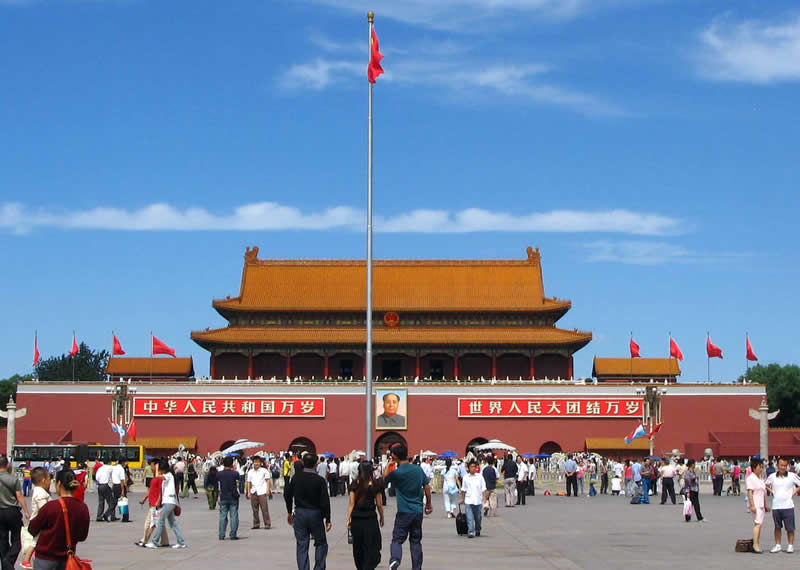 |  |
 |
| In the morning,A Bird's Eye View of Forbidden City at Jingshan Parkand other members in the lobby, we drive to the Tiananmen Square, you will enter the Imperial Palace, also known as the Forbidden City. | After we exit the Forbidden City, we will enter Jingshan Park where we will see local Chinese residents and we will climb the hill inside the park, when we reach the top of the hill, we will enjoy the bird view of the whole Forbidden City and Beijing central city. | At noon, we will have lunch at a superior Chinese restaurant. In the afternoon, we visit the Temple of Heaven. In the evening we will arrange a lively wonderful Chinese Kung Fu Show at Beijing Red Theater, then we drive back to hotel. |
| Place 1 | Place 2 | Place 3 |
|---|---|---|
| 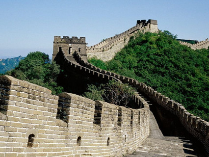 | 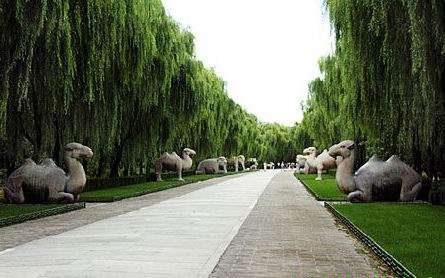 | 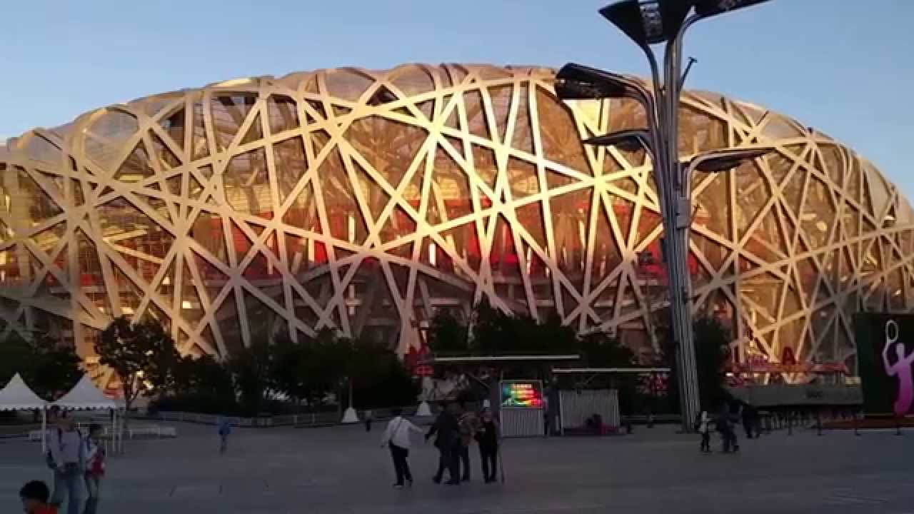 |
| In the morning, be prepared with your wearings and Badaling Great Wall shoes since we are going to hike the Badaling Great Wall. You can choose hike or take cable car(cable car ticket not include) to reach the top of the great wall. | At noon, we will have lunch at the Jade Museum near the great wall. After lunch, we will go to the Sacred Way which are encircled in the shadow of Longevity Mountain. | Then we will drive back to the city and stop in Olympic National Stadium area, where you can take pictures of Bird's Nest and Water Cube. Finally we will go back to hotel in Wangfujing, you can have a rest in hotel or enjoy the night views of Wangfujing Walking Street. |
| Place 1 | Place 2 | Place 3 |
|---|---|---|
| 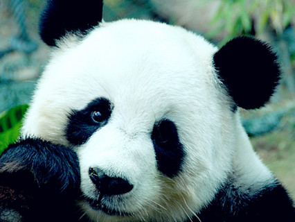 | 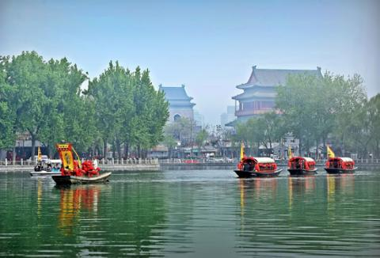 | 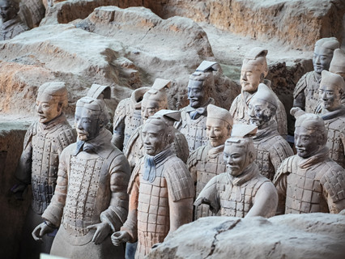 |
| In the morning we are going to visit Summer Palace - Giant Panda in Beijing Zoo the largest imperial garden with a beautiful landscape and magnificent buildings. After Summer Palace, we will visit Panda House inside Beijing Zoo, where we will see lovely pandas. | At noon, we will visit the old Hutong and the Shichahai Scenic Area(Hou Hai). In hutong, we will visit a local Beijing family and learn dumpling making and cooking skills. After that, we will visit a local market. Finally we will fly to Xian. | When you land in Xian, our local guide will meet you outside the baggage claim area and transfer you to the Hotel. Then, we are going to the Terra-cotta Warriors and Horses Terracotta Warriors and Horses Museum. |
| Place 1 | Place 2 | Place 3 |
|---|---|---|
 |
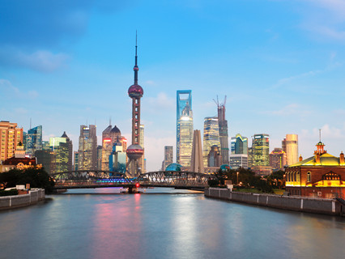 | 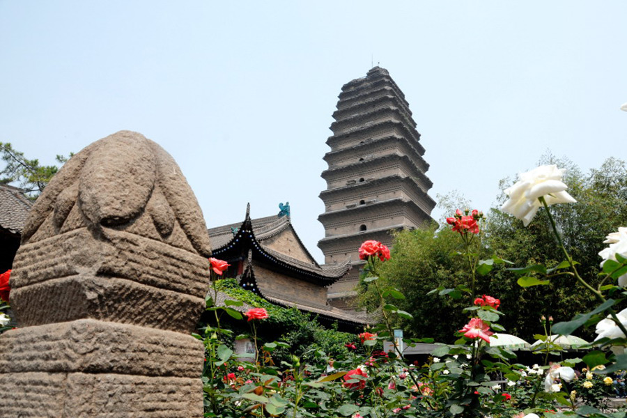 |
| In the morning,we will visit the ancient City Wall. Xian City Wall It was build in Tang Dynasty. It is the most complete existing urban fortification in China. Next we visit Shaanxi History Museum. | At noon, we will visit Shanghai Museum,Oriental Pearl TV Tower. After that, we will tour Yuyuan Garden, famous in the south China. At noon we have lunch at a good restaurant with Shanghai cuisine. | Then to explore the Small Wild Goose Pagoda, one of the two most significant Buddhist pagodas in Xian, which was built about 8th century. |
| Place 1 | Place 2 |
|---|---|
| 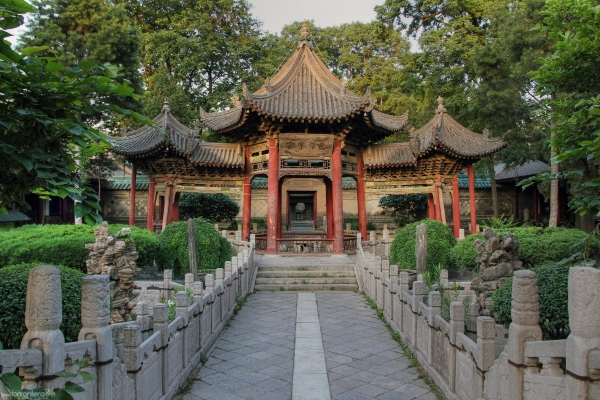 | |
| In the morning, in the middle of the old block of Xian, stands the Great Mosque, the oldest and biggest Islamic mosque in the country. We will visit there. | Also we would stop at the nearby Bell Tower & Drum Tower Square for some great photo opportunities. Later drive to the airport to catch the flight heading Shanghai. |
| Place 1 | Place 2 | Place 3 |
|---|---|---|
| 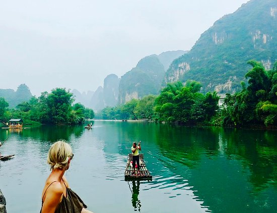 | 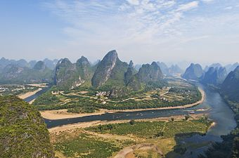 | |
| Full day Li River Cruise to Yangshuo with lunch aboard and return to Guilin late in the afternoon. Be met at your hotel at 7:50 ~ 8:30am and transferred to Li River pier(at 9:30am) | And then take a cruise (4.5 hours) to Yangshuo with lunch aboard. Enjoy picturesque scenery along the Li River with green hills and clear waters. Disembark at Yangshuo in the afternoon. | And take a short exploration to the 1400-year-old town. Back to your hotel in Guilin after the tour. You can have the full rest because next day will be homeward flight day. |
| Shanghi |
|---|
 |
| Today please arrange your own way to the airport for your homeward flight since the group's guests don' t have the coordinating agenda after the scheduled tour. |
| Price List | |
|---|---|
| Numbers of people | Usual Price |
| Single | $3000 |
| Dual | $6000 |
| Triple | $9000 |
| Four and above | $2600 for each |